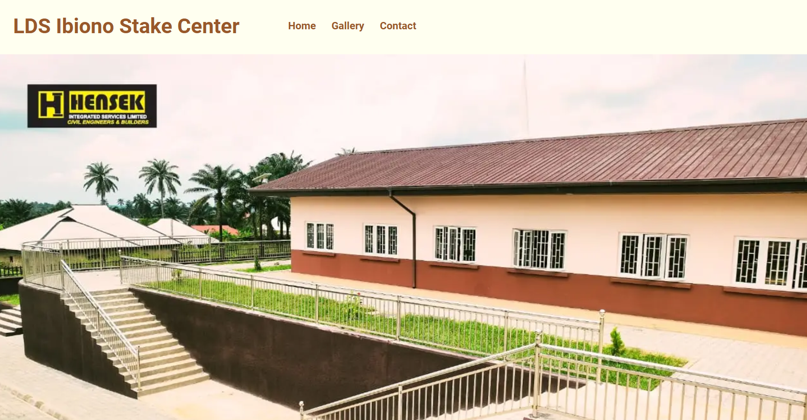
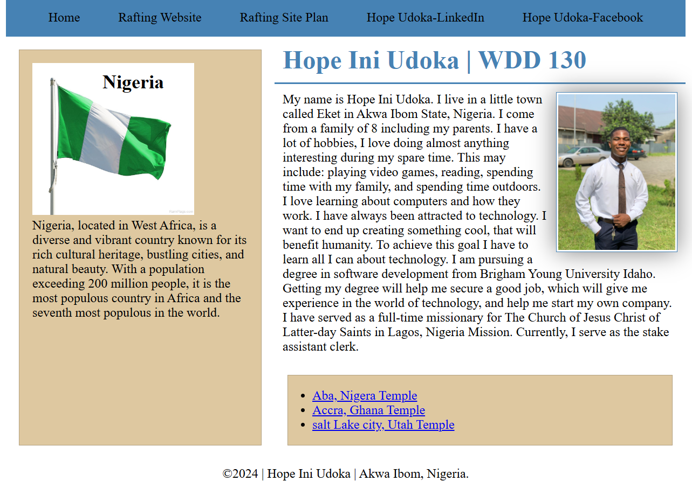
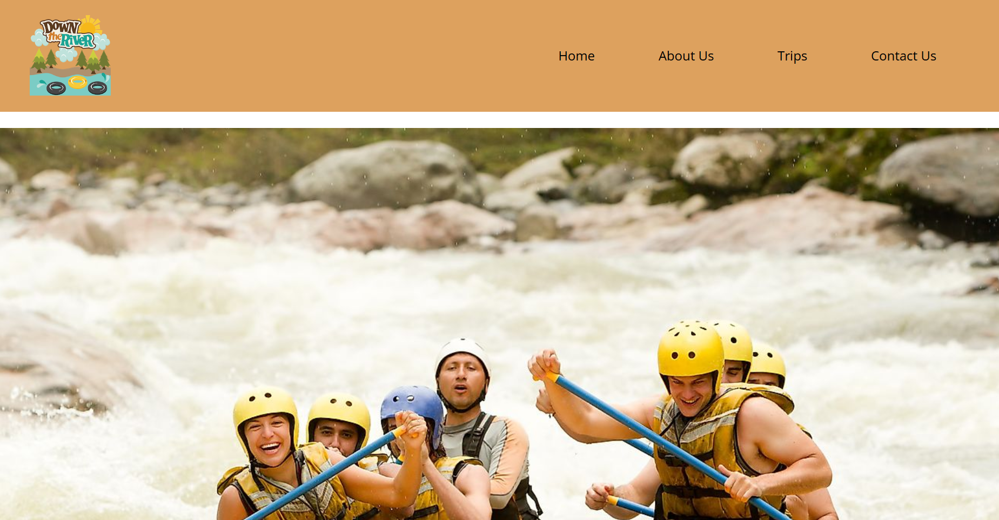
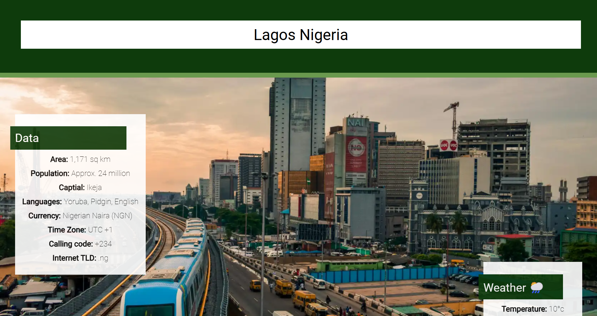

Ibiono Stake Center
A website showcasing the new built Ibiono Stake Center with facts, pictures and a form to contact the missionaries. Learn More

WWD130 Course Homepage
A BYUI course WDD130 homepage with access to linkedin, Canvas and course materials. Learn More

A white water rafting website
A website for a White water rafting company with ride prices and a form to book a trip. Learn More

Lagos State
A website about Lagos state with facts and guides. Learn More